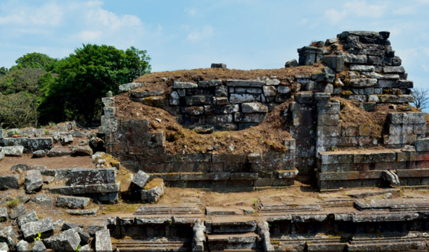
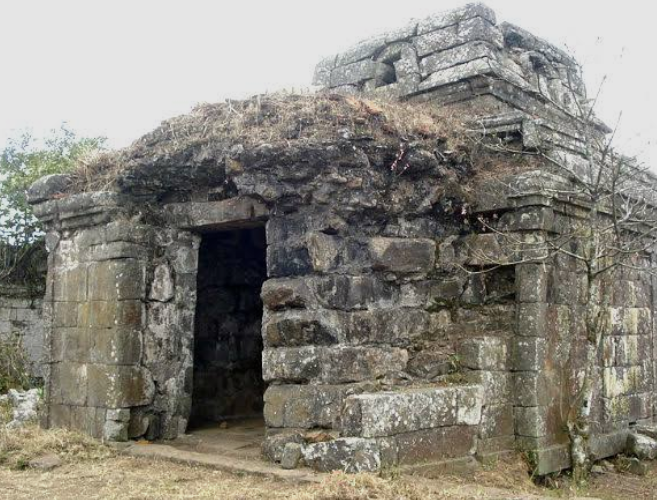
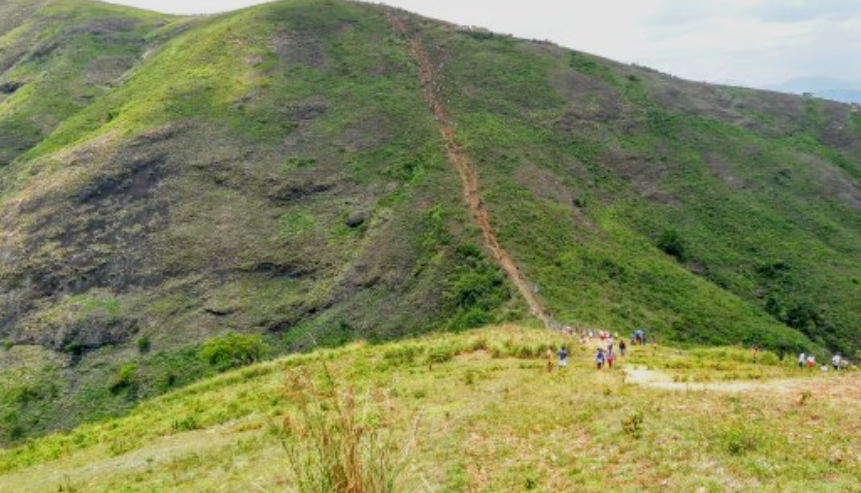
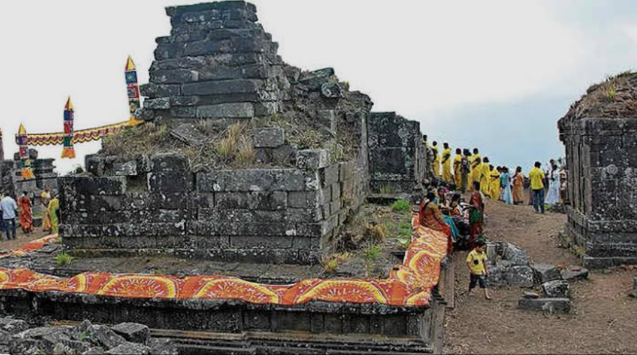
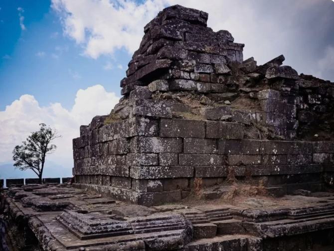

Mangala Devi Kannaki Temple is an ancient hilltop temple located inside the Periyar Tiger Reserve on the Kerala–Tamil Nadu border. The temple is believed to be over 2,000 years old and is dedicated to Goddess Kannaki, the legendary heroine of the Tamil epic Silappathikaram. Surrounded by dense forests and hills, the temple offers visitors a unique combination of history, spirituality, and natural beauty.
The temple is usually open to visitors only during the annual Chithra Pournami festival, when thousands of devotees gather to offer prayers. From the hilltop, visitors can enjoy breathtaking views of the forests, valleys, and nearby regions. Mangala Devi Kannaki Temple is an important pilgrimage site and a popular destination for history lovers, trekkers, and nature enthusiasts.





Mangala Devi Kannagi Temple is an ancient Hindu temple located inside the Periyar Tiger Reserve on the Kerala–Tamil Nadu border near Thekkady in Idukki District. The temple is dedicated to Goddess Kannagi (Mangala Devi) and is one of the oldest temples in South India. It is situated at an altitude of about 1,337 metres above sea level and is surrounded by dense forests and scenic hills. 1
According to tradition, the temple was built around 2,000 years ago by the Chera king Chenguttuvan in honour of Kannagi, the legendary heroine of the Tamil epic Silappathikaram. The temple is an important historical and cultural monument shared by Kerala and Tamil Nadu. 2
The temple is dedicated to Goddess Kannagi, who is worshipped as a symbol of purity, justice and devotion. Thousands of devotees from Kerala and Tamil Nadu visit the temple during the annual Chitra Pournami festival.
The temple is built in the ancient Dravidian style using large granite stones. Although parts of the temple are in ruins, its stone walls, entrance and carvings reflect the remarkable architectural skills of the early builders. 3
The temple is surrounded by evergreen forests rich in wildlife. Visitors may see elephants, sambar deer, birds, butterflies and many medicinal plants found in the Periyar Tiger Reserve.
Today, Mangala Devi Kannagi Temple is an important historical, religious and tourist destination. It attracts thousands of devotees and visitors every year, especially during the Chitra Pournami festival, and is protected as part of the Periyar Tiger Reserve. 4